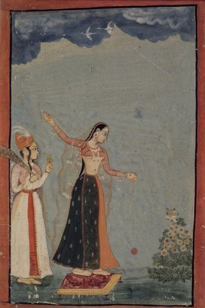

◤溜溜球是什麼？
定義
溜溜球(Yo-yo)是以一軸心從中連接兩圓型片，並有一條線纏繞其軸心。
遊玩時，手指以該線尾端的滑動指環固定，利用重力或是投擲力使其脫離纏繞狀態造成旋轉，此後利用此旋轉能量將繩子收回至溜溜球內並回到手上。這就是我們大家所說的溜溜球。
James L. Haven and Charles Hettrich in patented the first yo-yo in 1866 (U.S. Patent 59,745 ), under the name whirligig.
歷史
溜溜球早在西元前500年在古希臘時期被發明，他們利用陶瓷、木頭或是金屬來當作溜溜球的球體。有另一說法Yo-yo一詞是源自於菲律賓伊洛卡諾語的" yóyo"，他加祿語中的"回來"。過去的溜溜球設計，溜溜球線是綁在軸心上，此種設計只能讓溜溜球來回於線的兩端，並無法使其空轉。但是在十八十九世紀風靡於歐洲各地，在二十世紀初由菲律賓傳入美國。
之後美國重新設計溜溜球，並設計專屬的溜溜球線與創造滑動指環綁法，確立了近代溜溜球的結構，1920年開始在各個國家風行。
- 1932年
- 美國成立第一家溜溜球公司Duncan，同年註冊了Yo-yo為商標。1960年代，Yo-yo一詞不再是商標，而是一般通俗名詞。
- 1970年代
- 美國Tom Kuhn公司設計了第一顆可拆卸的溜溜球與三合一溜溜球體設計，這讓溜溜球內部零件開始可以替換。
- 1980年代
- 美國Yomega公司開發了離合器型溜溜球，尼龍軸承溜溜球，瑞典軸承公司SKF在1984年生產了少量的軸承式溜溜球，開始了金屬軸承式溜溜球的年代。
參考資料
Wikipedia http://en.wikipedia.org/wiki/Yo-yo

Boy playing terracotta yo-yo, Attic kylix, ca. 440 BC, Antikensammlung Berlin (F 2549), from Wikipedia.
A 1791 illustration of a woman playing with an early version of the yo-yo, then known as a "bandalore", from Wikipedia.

Lady with a yo-yo, Northern India (Rajashtan, Bundi or Kota), ca. 1770 Opaque watercolor and gold on paper, from Wikipedia.